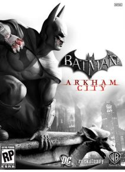

Batman: Arkham City este un joc video de acţiune-aventură dezvoltat de Rocksteady Studios şi lansat de Warner Bros Interactive Entertainment pentru PlayStation 3 şi Xbox 360 console de jocuri video , şi Microsoft Windows . Bazat pe DC Comics super - erou Batman , este continuarea jocului 2009 film Batman: Arkham Asylum , iar a doua tranşa în Batman: Arkham serie. Acesta a fost lansat la nivel mondial pentru console, începând din America de Nord la data de 18 octombrie 2011, apoi cu o versiune Microsoft Windows pe 22 noiembrie.
Preţ : 45,30 €